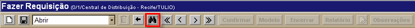

Fazer Requisição [ Voltar ]
Utilize esta tela para realizar de requisições de consumo na rede.
O formulário "Fazer Requisição" encontra-se dentro do menu "Consumo".
Ao clicar no nome do
formulário, o sistema abrirá a seguinte tela:
Este
manual contém os passos para exibe o passo-a-passo para as seguintes
funcionalidades:
- Fazer requisição de consumo
- Consultar requisições existentes
Fazer requisição de consumo
1º
Passo: preencha os dados principais da requisição. Os campos em amarelo são obrigatórios. - Requisição. Não é necessário preencher este campo, que apresenta por padrão um sinal de mais "+". Desta forma, assim que
a requisição é salva, é-lhe atribuída o próximo número de requisição
disponível;
- Status. Este campo exibe o status atual da requisição: Em aberto, Ag. atendimento, Atendido e Encerrado;
- Data. É exibida aqui a data em que o registro foi criado;
- Local Requisitante. É exibido aqui o local de origem da requisição;
- Local Abastecedor. Informe aqui o código do local abastecedor desta requisição. Clique no botão
 [Procurar] para selecioná-lo a partir de uma listagem contendo todos os locais cadastrados;
[Procurar] para selecioná-lo a partir de uma listagem contendo todos os locais cadastrados; - Prioridade. Informe aqui a prioridade desta requisição: Emergencial, Periódico ou Eventual;
- Entrega. Informe aqui a data sugerida para a entrega. Clique no botão
 [Data] para selecionar a data a partir de um calendário. Dicas para preenchimento dos campos de data: [Data] para selecionar a data a partir de um calendário. Dicas para preenchimento dos campos de data:
- Data atual: digite o sinal . (ponto) e pressione a tecla "Enter" para que o sistema retorne a data atual;
- Data do mês corrente: digite o dia do mês e pressione a tecla "Enter" para que o sistema retorne o mês e ano correntes;
- Dias a contar da data atual: digite o sinal +
(mais) ou - (menos) antes do número de dias em referência à data atual
e pressione a tecla "Enter" para a data anterior ou posterior à data
atual.
Exemplo: se a data atual é 20/10/2010, digite "+10" e pressione a tecla "Enter" para que o sistema retorne o dia 30/10/2010. - Programa. Informe aqui o código do programa associado a esta requisição;
- Observações. Deposite neste campo informações adicionais sobre o requisição.
2° Passo: clique no botão  para salvar os dados principais da requisição. Assim que a requisição é salva, uma grade para inclusão dos produtos da requisição será exibida na parte inferior da tela. para salvar os dados principais da requisição. Assim que a requisição é salva, uma grade para inclusão dos produtos da requisição será exibida na parte inferior da tela.
3º Passo: especifique na grade os produtos e quantidades requisitadas. No campo "Scan", informe o código do produto ou faça a leitura do código de barras. Clique no campo e botão
[Procurar] para selecioná-lo a partir de uma
listagem de produtos cadastrados. Após informar o produto, pressione a
tecla "Tab" ou clique fora do campo para que o produto seja carregado.
No campo "Quant. Requisitada", informe a quantidade para o produto. Pressione a tela "Enter" ou "Tab" para ir de um campo a outro. Você
pode também utilizar os botões da grade para adicionar ou excluir
linhas, pesquisar itens da grade e exportar os dados da grade para uma
planilha Excel.
Dica: selecione um
produto e clique com o botão direito do mouse sobre o campo "Produto" para escolher a forma de ordenamento dos itens da grade: ascendente ou descendente.
4° Passo: clique no botão  a requisição. Após a confirmação, a requisição passará para o status Aguardando recebimento. Os campos "Quant. Enviada" e "Quant. Recebida" podem ser utilizados para controle da requisição. a requisição. Após a confirmação, a requisição passará para o status Aguardando recebimento. Os campos "Quant. Enviada" e "Quant. Recebida" podem ser utilizados para controle da requisição.
Assim que a requisição é confirmada, os seguintes botões serão habilitados na barra de botões:
 | Clique neste botão se desejar encerrar esta requisição
de consumo. A requisição apenas poderá ser
encerrada caso a transferência ainda não tenha sido recebida. |  | Clique neste botão para visualizar e imprimir o relatório "Requisição de Consumo". | | Utilize este botão para registrar que o relatório referente a esta requisição já foi impresso. |  | Clique neste botão se desejar adicionar outras informações sobre esta requisição |
Consultar requisições existentes
Para consultar requisições realizadas anteriormente, siga os passos abaixo.
1º Passo: clique no botão  para localizar a requisição que deseja
abrir. para localizar a requisição que deseja
abrir.

A tela de consulta de registros de requisição será exibida.
Selecione na seção "Favoritos", o conjunto de filtros de pesquisa mais
adequado para a consulta. Os favoritos disponíveis são: Padrão, Sou Requisitante, Sou Abastecedor e Consulta Detalhada. Em seguida, configure os filtros de pesquisa para facilitar a localização do registro desejado. Para mais informações sobre
outros recursos
e
funcionalidades da pesquisa, favor ver o manual Introdução
ao Sistema.
Selecione com um clique a requisição desejada. As informações atuais da mesma serão exibidas na tela.
|